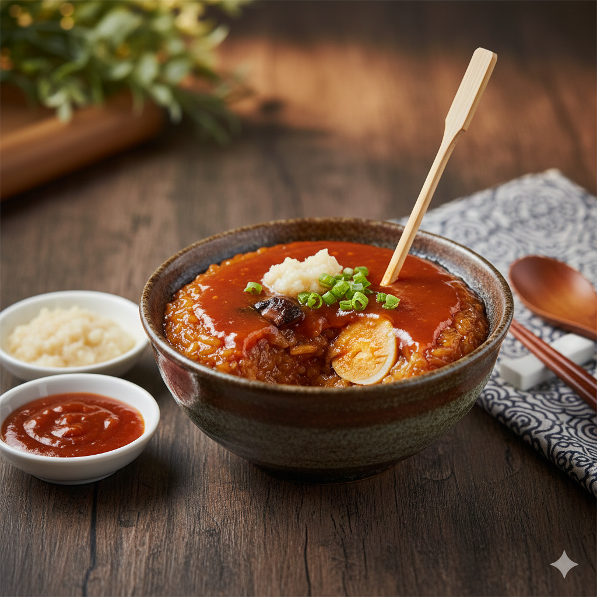

學號姓名：91034107 陳振瑋
🥣 府城懷舊滋味：麻豆碗粿

麻豆碗粿是南台灣最具代表性的米食點心之一。不同於北部的白色碗粿，麻豆碗粿在製作米漿時會混入滷肉汁與醬油，使色澤呈現誘人的琥珀色。內餡豐富包含鹹蛋黃、香菇與肉塊，最後淋上濃郁蒜泥醬油膏，口感 Q 彈扎實。
🛒 必備食材
- 米漿基底：在來米粉、溫水、醬油、五香粉。
- 傳統內餡：豬後腿肉、鹹蛋黃、乾香菇、紅蔥頭酥。
- 靈魂醬料：蒜泥、甜辣醬、膏狀醬油。
👨🍳 製作教學
- 準備配料：將香菇與豬肉切塊後與紅蔥頭酥炒香，加入少許醬油調味備用。
- 調製漿料：在來米粉加水拌勻，加入少量醬油調色，邊加熱邊攪拌至半糊狀。
- 填碗：取瓷碗，放入肉塊、香菇及 1/4 顆鹹蛋黃，再倒入米漿至九分滿。
- 炊蒸：放入蒸籠，以大火蒸約 25-30 分鐘直到中心全熟。
💡 內行吃法：碗粿蒸好後需稍微放涼，讓米漿組織收縮，口感會更加 Q 彈！吃的時候記得用竹籤劃開，塞入滿滿的蒜泥與醬油膏。